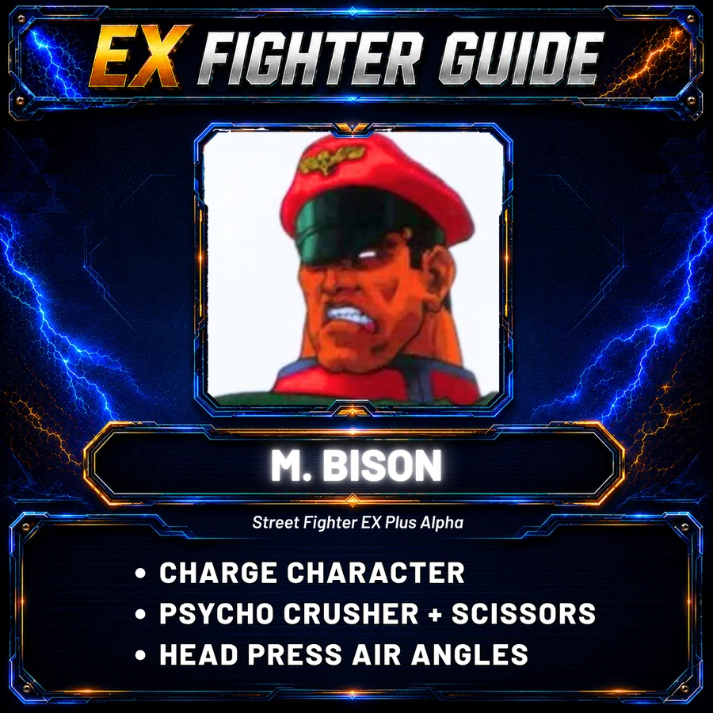
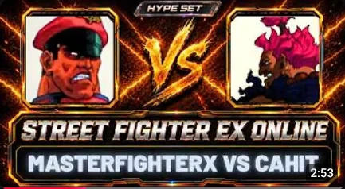

PICKED: EX PLUS ALPHA
STREET FIGHTER
EX PLUS ALPHA
The PlayStation original. Watch online matches, dig into archive footage and find your way into EX Plus Alpha today.
PLAYSTATIONONLINE VIA ARKADYZJA5 ARCHIVE VIDEOS
01 • PLAY ONLINE
PLAY EX PLUS ALPHA ONLINE.
Yes, EX Plus Alpha can be played online today through Arkadyzja. Get the current setup route, official Arkadyzja resources and the SFEXOnline video walkthrough.
HOW TO PLAY EX PLUS ALPHA ONLINE →
CURRENT METHOD
ARKADYZJA
PLAYSTATION • CURRENT ROUTE
02 • EX FIGHTER GUIDE
FIND YOUR EX PLUS ALPHA FIGHTER.
Start with the completed EX Fighter Guides for EX Plus Alpha. Get a quick feel for each character, see their tools in motion and then watch them in a real match.
03 • EX PLUS ALPHA MATCHES
START WITH THE GAMEPLAY.
EX Plus Alpha has its own corner of the archive. Start with one of our strongest short sets, then keep digging through SFEXOnline uploads and footage from the wider community.

HYPE SETMasterFighterX vs Cahit
Short, sharp and one of the strongest matches in the SFEXOnline archive. A clean first look at what EX Plus Alpha can feel like online.
FROM THE ARCHIVE
KEEP WATCHING.
SFEXOnline uploads and community footage together, with original sources kept visible.
 ▶
▶
SFEXONLINE UPLOAD
EX Plus Alpha Online Match
Another match from the growing SFEXOnline archive.
WATCH MATCH ↗ ▶COMMUNITY
▶COMMUNITY
COMMUNITY SOURCE
Street Fighter EX Plus Alpha Online 9
Community footage from Soniya Chan.
WATCH ORIGINAL ↗ ▶COMMUNITY
▶COMMUNITY
COMMUNITY SOURCE
Kikimou vs Mamiii
Arkadyzja EX Plus Alpha footage from the wider online scene.
WATCH ORIGINAL ↗ ▶COMMUNITY
▶COMMUNITY
COMMUNITY SOURCE
Wavy vs Mavado
Skullomania/Ryu vs Kairi/Allen/Jack from the wider EX/FEXL community.
WATCH ORIGINAL ↗